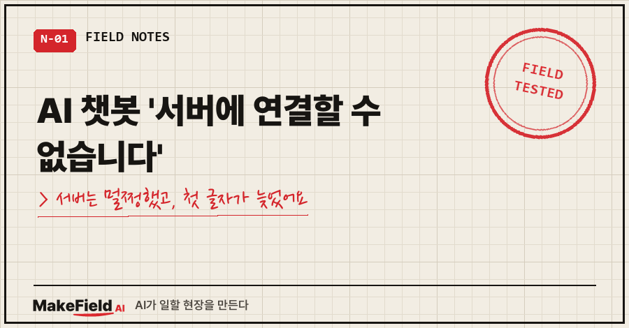
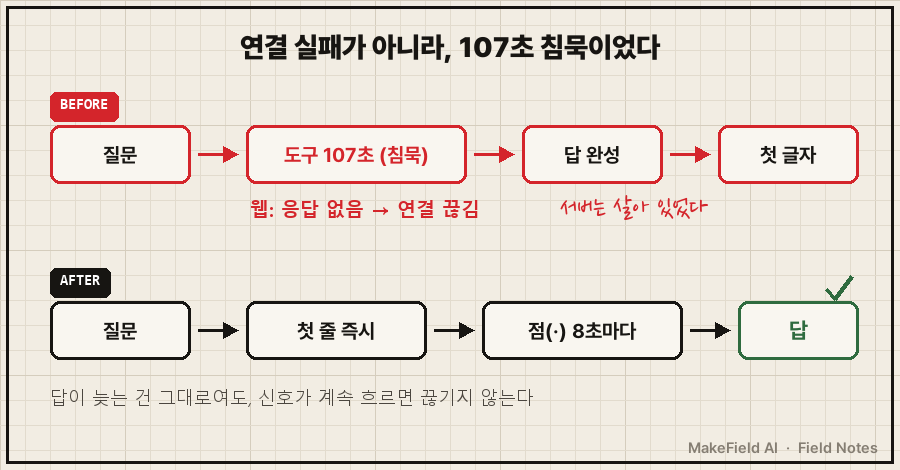
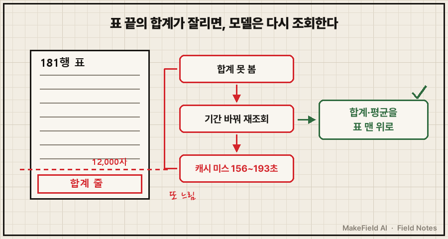
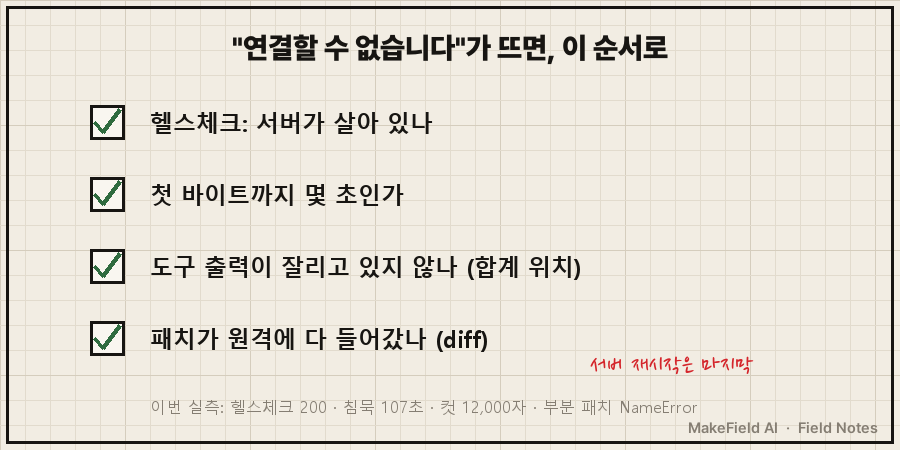

밤 11시 반쯤, 웹 화면에 붙여 둔 AI 챗봇에 데이터 질문을 넣었더니 이 문구가 떴어요.
AI 서버에 연결할 수 없습니다제가 AI 코딩 도우미한테 처음 던진 말이 "서버 문제 있나? 연결할 수가 없다는데?"였어요.
그래서 서버부터 봤죠. 서비스 4개 헬스체크, 전부 200이었습니다.
AI 챗봇에 "서버에 연결할 수 없습니다"가 떠도 서버는 멀쩡할 수 있어요. 답을 다 만든 뒤에야 첫 글자를 보내는 구조면, 답이 오래 걸리는 동안 앞단 웹이 "응답 없음"으로 보고 연결을 끊습니다. 제 경우엔 도구 실행에만 107초가 걸렸고, 그동안 챗봇은 한 글자도 안 보냈어요.
제 본업은 제조 현장의 제어·자동화예요. 15년쯤 됐고, 올해는 그 옆에서 업무용 GPU 서버에 직접 올린 AI로 설비 운전 데이터에 말로 묻는 챗봇을 굴리고 있습니다. 이번 건은 고치다가 제가(정확히는 제 AI 코딩 도우미가) 한 번 더 크게 망가뜨린 이야기이기도 해요.
1. 서버가 멀쩡한데 왜 "연결할 수 없다"고 하나요?
로그를 따라가 보니 순서가 이랬어요.
23:33 질문 도착
→ 모델이 데이터 조회 도구를 '기간 없이' 호출 (전체 기간, 1년 가까운 데이터)
→ 도구 실행 107초 (메모리 한도를 낮춘 설정에서는 185초)
→ 답 완성 후 첫 바이트 전송 ← 이 구조가 문제챗봇은 답을 다 만들고 나서야 한꺼번에 보내게 되어 있었어요. 그러니 2분 가까이 아무 신호도 안 나간 거죠. 웹 쪽은 그걸 "서버가 죽었다"로 읽은 거고요.
이런 끊김은 흔한 구조예요. 예를 들어 nginx의 proxy_read_timeout은 기본 60초인데, 공식 문서에 이 시간이 응답 전체가 아니라 "두 번의 연속된 읽기 사이"에만 걸린다고 적혀 있어요. 뒤집어 말하면, 뭐라도 조금씩 흘려보내면 안 끊긴다는 뜻이죠.

2. 스트리밍 넣다가 그 시간대 질문을 다 죽였어요
처방은 단순해 보였어요.
첫 줄을 바로 보내는 스트리밍, 그리고 같은 조회를 다시 안 하게 결과 캐시.
AI가 패치를 원격 서버 파일에 적용했는데.. 여기서 사고가 났습니다. 캐시 패치가 일부만 들어간 거예요. 한 줄만 바뀌고 나머지는 그대로였어요.
도구 실행 완료 → NameError → 응답 전송 안 됨그 결과 23시 40분대~50분대 데이터 질문이 전부 실패했어요. 고치러 들어갔다가 더 넓게 망가뜨린 거죠. 원격 파일을 통째로 받아서 다시 쓰고, 재기동하고, 캐시가 0초로 적중하는 것까지 확인하고 나서야 복구됐습니다.
여기서 하나 배웠어요. 원격 파일 부분 패치는 적용 결과를 diff로 보기 전까지는 배포가 아니에요. "적용했습니다"라는 말은 적용 결과가 아니더라고요.
3. 재시험도 실패: 출력을 자르면 합계가 날아가요
복구하고 같은 질문을 다시 넣었는데 또 실패였어요. 원인이 꽤 고약했습니다.
도구 결과가 너무 길면 모델에 넘기기 전에 12,000자에서 자르게 해 뒀거든요. 그런데 전체 기간 표가 181행이었고, 표 맨 끝의 '합계' 줄이 잘려 나갔어요.
그다음이 연쇄예요.
- 모델이 합계를 못 봄
- 기간을 바꿔서 다시 조회함
- 기간이 바뀌었으니 캐시 미스 → 156~193초
- 또 느려짐
게다가 연결 유지용으로 보내던 빈 문자열 keep-alive는 실제로는 전송조차 안 되고 있었어요.
웃긴 건, 이 자르기 규칙은 같은 날 저녁에 반대 방향으로 한 번 데인 거였어요. 처음엔 출력 뒤쪽만 남겼다가 앞쪽 값이 잘려서 "값 미제공" 오답이 났고, 그래서 앞쪽 12,000자 우선으로 바꿨거든요. 그랬더니 이번엔 끝에 있던 합계가 잘린 거죠.
어느 쪽을 자르느냐의 문제가 아니었어요. 중요한 건 무조건 앞에 둬야 하는 거였습니다.

4. 결국 바꾼 것 5가지
웹 화면 쪽 설정은 건드리지 않고, AI 쪽에서만 고쳤어요.
| 무엇을 | 어떻게 | 왜 |
|---|---|---|
| 첫 응답 | 질문 받자마자 첫 줄 전송 | 침묵 시간을 없앰 |
| 연결 유지 | 빈 문자열 대신 눈에 보이는 점(·)을 8초마다 | 빈 문자열은 실제로 안 나갔음 |
| 표 순서 | 합계·기간 평균을 표 맨 위로 | 잘려도 핵심은 남게 |
| 표 길이 | 45일이 넘으면 운전한 날만 표에 | 181행짜리 표 자체를 줄임 |
| 캐시 | 인자 정규화 + 매시 전체 기간 예열 | 같은 질문은 같은 캐시 키 |
자정을 넘겨 00시 12분에 웹 화면에서 같은 질문을 다시 했어요. 이번엔 답이 왔고, 숫자도 도구가 낸 결과와 맞았습니다.
참고로 SSE 방식이라면 표준 문서(WHATWG HTML)는 이런 끊김을 막으려고 콜론(:)으로 시작하는 주석 줄을 15초쯤마다 보내라고 권해요. 저는 빈 문자열이 실제로 안 나가는 걸 본 뒤라, 화면에 확실히 찍히는 점으로 갔고요.

5. 자주 묻는 질문
Q. AI 챗봇 "서버에 연결할 수 없습니다"면 서버를 재시작해야 하나요?
먼저 헬스체크로 살아 있는지 보고, 살아 있으면 첫 글자가 나가기까지 몇 초 걸리는지부터 재 보세요. 제 경우엔 서버는 멀쩡했고, 107초 침묵이 원인이었어요. 재시작은 그 원인을 그대로 둔 채 같은 증상을 다시 부를 뿐이에요.
Q. LLM에 붙인 도구 출력은 얼마나 잘라야 하나요?
길이보다 순서가 먼저예요. 저는 12,000자로 잘랐는데, 합계가 표 끝에 있으니 그게 잘려서 모델이 재조회를 했어요. 요약·합계를 맨 위에 두면 어디서 잘려도 핵심이 남아요.
Q. 캐시를 넣었는데도 왜 느렸나요?
모델이 같은 질문에도 매번 조금씩 다른 인자(기간·묶음 단위)로 도구를 불렀거든요. 인자가 다르면 캐시 키가 달라서 못 씁니다. 인자를 정규화해서 같은 뜻이면 같은 키를 타게 하고, 무거운 전체 기간 조회는 매시 미리 데워 두는 게 효과가 있었어요.
이번 일로 제 확인 순서가 바뀌었어요. "연결 안 됨"이 뜨면 이젠 서버 재시작보다 첫 바이트까지 몇 초인지부터 봅니다. 대부분은 연결 문제가 아니라 느림 문제더라고요.
예전에 개인용 AI 봇에서 겪은 비슷한 시간 초과는 AI 봇 시간 초과 300초 글에 따로 적어 뒀어요. 그쪽은 제 봇이 스스로 끊은 경우고, 이번 건 앞단 웹이 끊은 경우입니다.
설비 데이터에 AI를 붙이다 끊기고 막힌 장면들은 makefield.ai에 로그째로 모아 두고 있어요.
참고
- nginx 공식 문서 —
proxy_read_timeout(기본 60s, 두 번의 연속된 읽기 사이에만 적용) → https://nginx.org/en/docs/http/ngx_http_proxy_module.html#proxy_read_timeout - WHATWG HTML 표준 — Server-sent events(프록시 끊김 대비 ':' 주석 줄 약 15초마다 권고) → https://html.spec.whatwg.org/multipage/server-sent-events.html
- 실측: 2026년 11월 개인 작업 기록(로그 시각·응답 시간·출력 컷 길이·행 수, 서비스·서버·설비 이름과 설비 데이터 수치 제외)
태그: #AI챗봇오류 #서버에연결할수없습니다 #AI챗봇응답지연 #LLM도구출력 #출력잘림 #스트리밍응답 #keepalive #첫바이트 #타임아웃 #결과캐시 #부분패치 #로컬LLM #데이터챗봇 #막힐때해결 #MakeFieldAI